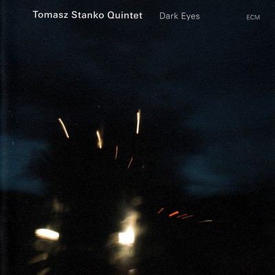
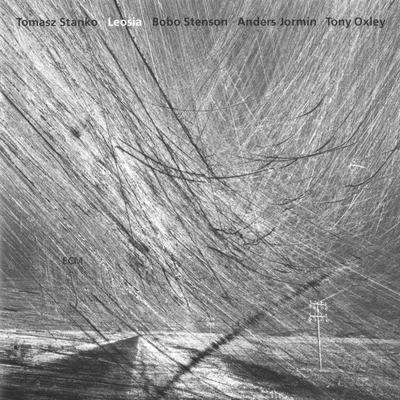
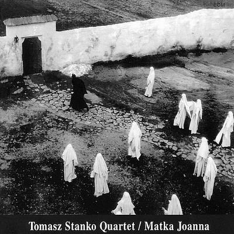
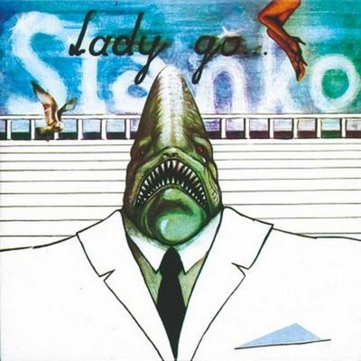
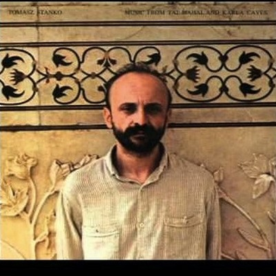
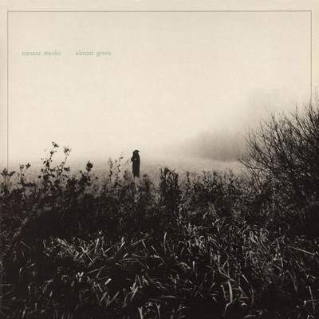

Tomasz Stańko Quintet
Dark Eyes
Dark Eyes
- So nice
- Terminal 7
- The Dark Eyes of Martha Hirsh
- Amsterdam Avenue
- Samba Nova
- Dirge for Europe
- May Sun
- Last song
- Etiuda baletowa no. 3
Tomasz Stańko Quartet
Lontano
Back Side
Tomasz Stańko
Freedom in August
Tomasz Stańko
Selected Recordings
Tomasz Stańko Quartet
Suspended Night
Tomasz Stańko Quartet
Soul of Things
Tomasz Stańko
Reich

Tomasz Stańko
Egzekutor
Tomasz Stańko
From The Green Hill

Tomasz Stańko Quartet
Leosia
Tomasz Stańko
Roberto Zucco

Tomasz Stańko Quartet
Matka Joanna
Tomasz Stańko
Balladyna – Theater Play Compositions

Tomasz Stańko
A Farewell to Maria
Tomasz Stańko Quartet
Bosonossa and Other Ballads
Tomasz Stańko
Bluish
Tomasz Stańko
Tales for Girl , 12, And a Shaky Chica
Tomasz Stańko
Chameleon
Tomasz Stańko
The Montreux Performance
Tomasz Stańko
Witkacy Peyotl / Freelectronic

Tomasz Stańko
Lady Go …
Tomasz Stańko
C.O.C.X.
Tomasz Stańko
AiJ
Tomasz Stańko
Mucic 81
Tomasz Stańko Quintet
Stanko

Tomasz Stańko
Music from Taj Mahal and Karla Caves

Tomasz Stańko
Almost Green

Tomasz Stańko
Balladyna
Tomasz Stańko
TWET
Tomasz Stańko
Fish Face
Tomasz Stańko Quintet
Purple Sun
Tomasz Stańko Quintet